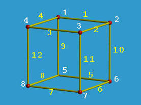
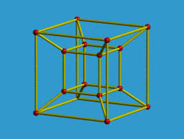
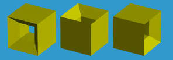

Wireframe Model（线框模型） #
本节内容主要介绍在 CAD 开发中描述几何体的一种方式：Wireframe Model, 即线框模型表示法。
定义 #
Wireframe Model 是一种比较古老的描述方法，通过记录几何体的顶点（Vertex）和边（Edge）来表示模型。为了记录模型的形状，代码里面维护了两张表，一张表记录几何体的顶点坐标和索引，一张表记录边是由哪两个顶点构成。
以一个正方形为例。

Vertex Table:
| Vertex | x | y | z |
|---|---|---|---|
| 1 | 1 | 1 | 1 |
| 2 | 1 | -1 | 1 |
| 3 | -1 | -1 | 1 |
| 4 | -1 | 1 | 1 |
| 5 | 1 | 1 | -1 |
| 6 | 1 | -1 | -1 |
| 7 | -1 | -1 | -1 |
| 8 | -1 | 1 | -1 |
Edge Table:
| Edge | Start Vertex | End Vertex |
|---|---|---|
| 1 | 1 | 2 |
| 2 | 2 | 3 |
| 3 | 3 | 4 |
| 4 | 4 | 1 |
| 5 | 5 | 6 |
| 6 | 6 | 7 |
| 7 | 7 | 8 |
| 8 | 8 | 5 |
| 9 | 1 | 5 |
| 10 | 2 | 6 |
| 11 | 3 | 7 |
| 12 | 4 | 8 |
缺点 #
1、有时候并不能正确表示一个几何体
例如下面的线框模型，它表示的是一个中间带洞的正方体，线框模型没法正确表示洞的方向。

洞可以有三种方向：

另外当 Edge 不是直线时，仅记录顶点并不能正确描述几何体的形状，还需要维护 Edge 的形状，一般是 Edge 所属的 curve 的函数方程。
优点 #
线框模型表示法比较简单，程序处理比较快速，非常适合模型的预览。
（完）